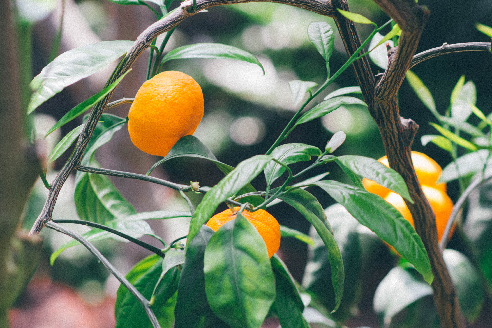
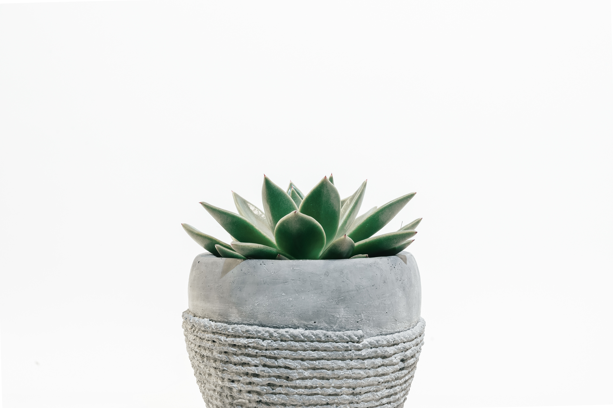

I love anything green tea or matcha flavored. I love tea with or without milk, in tea leaf of tea bag form.

I love fruit! My favorites would be clementines, watermelons, strawberries, blueberries, peaches, mangoes... I'm currently catsitting a cat that looks similar to the one in the picture. So cute!

I like succulents because they're easy to take of. Back to Home Page